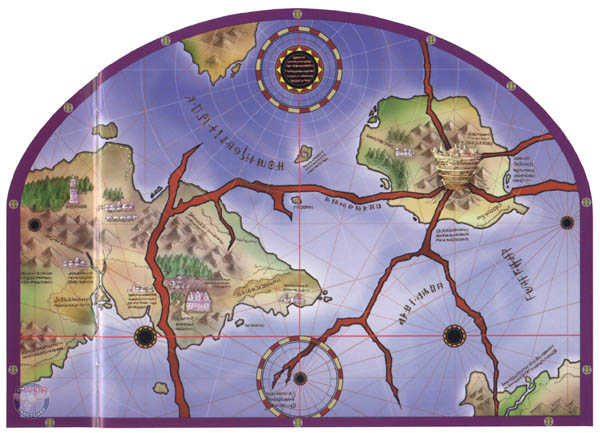

Оглавление
Введение
Глава1
Глава2

ГЛАВА 1
1. Witt Forest
Видим сначала группу людей в лесу, несколько служительниц церкви , милых таких девушек. Затем нам показывают главного героя игры, отважно добывающего какой то предмет из лагеря человекоящеров. По ходу дела он умудряется прикончить одного из них, а от остальных благополучно смыться с помощью своего верного боевого друга Skye. Затем Ryudo отдает предмет какому-то слишком ворчливому мужику с дочкой и получает за это награду. Жаль дочку увели быстро, даже полюбоваться не дали. Работа наемников трудна и неказиста. Письмо со след. заданием находится на дереве, где мы его благополучно и находим. Из него Ryudo узнает, что Церковь Бога Гранас хочет нанять его в роли телохранителя одно из его последовательниц.
Идем на север, затем на запад за 'wound salve', затем на север, запад потом на юг и находим 'poison antidote'. Идем на восток до дороги и сворачиваем на юг. Чуть дальше сворачиваем с дороги, идем на запад и находим самое замечательное место в игре! МЕСТО СОХРАНЕНИЯ (Save)! Сохраняемся. Ползем на юг и поднимаемся по лестнице. На западе находится сокровище - 'Blizzard Charm'. Двигаем на юг и спускаемся уже по другой лестнице. Дальше на восток, затем на юг, встречаем первого паука по совместительству первым противником. После кровавого боя двигаем на юго-запад до местонахождения след. сокровищ - 'Wound Salve', 'Hand Grenade' и 'Yomi's Elixir'. Оттуда на запад затем юг и мы в Carbo Village.
2.Carbo Village
Character Levels: Ryudo 10
При входе мы встречаем группу девушек из храма. Глядя на их прекрасные лица можно задуматься над посещением подобных заведений. После краткого и абсолютно не информативного диалога мы снова берем управление главным персонажем и начинаем обследовать город. INN - место где можно сохраниться, General Store - главный магазин по продаже всякой всячины включая оружие и броню, но за неимением финансов двигаем в храм. Попадаем прямо на бесплатное выступление местного дарования эстрадного жанра. Хотя все церковные песни и тянут на хреновую попсу, но голос у нее хороший можно заслушаться… да и фигурка ничего. После прихода отца-настоятеля мы наконец-то узнаем, в чем заключается наше задание. Оказывается девушка, которая так хорошо поет и есть та барышня, что предстоит охранять главному герою. Ну не все так плохо, как казалось. Затем священник просит сходить Елену (так зовут певицу) приготовиться, а Риудо - подождать их в таверне(INN). Ну что ж двигаем в таверну и ждем…
Итак, все готово к путешествию. В задачу входит сопроводить девушку до старой башни, подождать пока она с подружками совершит там какой-то ритуал, а затем вернуть ее назад. Все просто до безобразия. Наверняка будет какой-нибудь подвох. Ну это потом, а сейчас в путь!
3.The Black Forest
Character Levels: Ryudo 10
Сначала двигаем на восток и север и получаем 'Medical Herb'. Затем на запад и север. Тут происходит маленькое выяснение отношений между Риудо и Еленой. После того как главный герой преподал несколько уроков по выживанию в лесных массивах из леса появляется монстр, которого Риудо разносит в щепы (не без нашей помощи естественно). Дальше идем на восток, затем на северо-запад и попадаем в THE BLACK FOREST 2.
Движемся на север. Придется пообщипать еще двух навязчивых птичек, которые так и норовят отведать острого клинка. После битвы продолжаем двигаться на север, а затем на восток до развилки, обходим кругом дерево и получаем 'Myriad Power Nut'. Возвращаемся на развилку и идем на запад и поднимаем 50G, двигаем на север к NORTH SILESIA. Выбираем GARMIA TOWERS. Вот мы и у башни. Подружки Елены уже ждут. На вопрос "Что происходит?", получаем довольно сухой ответ: ждать тут до конца церемонии и НИ В КОЕМ СЛУЧАЕ НЕ ПРЕРЫВАТЬ ЦЕРЕМОНИЮ! Как скажете. Сделал дело - гуляй смело на те деньги, которые заработал.
Далее следует философская беседа с верным другом Скаем на тему женской красоты и любовных чувств. Время идет, а никто так и не вышел. Странно все это. После того, как вспышка света озарила окрестности Риудо решит все-таки лично проверить, как продвигается церемония, в случае чего поторопить самым веским аргументом - стальным и остро заточенным. Берем управление в свои руки и двигаем внутрь башни (GARMIA TOWER 1ST FLOOR).
4. Garmia Tower
Character Levels: Ryudo 10-11
После того как мы попадаем внутрь Риудо замечает, что кое-кто тут лишний. И этот кое-кто ползает по всей башне. Надо исправить досадное недоразумение. Для начала сохраняемся, а затем приступаем к зачистке местного населения. Состоит оно из пауков и горгулий. Ни те, ни другие не представляют особой сложности. Если исследовать весь этаж то можно обнаружить 'Wind Charm' ,'wound salve' и 'Hand Grenade'. Плюс то, что было добросовестно снято с трупов врагов. Затем двигаем на GARMIA TOWER 2ND FLOOR. Этот этаж не представляет из себя ничего интересного, так что сразу поднимаемся на GARMIA TOWER 3RD FLOOR.
На третьем этаже нас будут ждать все те же горгулии. Броня конечно у них хорошая, но жизней не очень, да и слабовато бьют. Главной достопримечательностью несомненно является место Сохранения. Обязательно используем его по назначению. Особо увлекшиеся исследованием местности найдут 'wound salve' и 150g. Двигаем на GARMIA TOWER TOP FLOOR. 2 горгулии наверно тут вышибалами работают. На босса не тянут, так что быстренько учим их уму разуму и двигаем дальше. Видим Тессу, распростертую на полу. Ей уже даже электрошок не поможет, так что выполняем ее последнюю просьбу - отыскать и спасти Елену. Дверь в комнату церемонии закрыта. Зато окна довольно большие, так что вышибаем одно из них и в духе спецназа влетаем в комнату с мечем на перевес. Елену окружает какое-то странное темное облако. Откуда интересно эти крылья за ее спиной? В двойном сальто красиво выхватываем ее из этого поля и дуем прочь из башни. Ну вот вроде бы пришла в себя. Хотя ни черта не помнит, что с ней было, как она туда попала, да к тому ж ноет, что ей жалко всех погибших, и она лично проверит кто еще выжил. Разбежалась! Мое дело ее доставить теперь в храм и получить обещанную награду, и никакие вопли этой девчонки меня не остановят.
5. Carbo Village (2nd visit)
Character Levels: Ryudo 11
По возвращению в деревню настоятель церкви поведает нам, что это плохо... То что церемония не состоялась. Как будто я без него не понимаю. Он начнет нести обычную церковную чушь на тему борьбы добра и зла. Главной информацией во всем этом трепе, это то, что в Елену вселилась частица темного бога и в течении какого то времени она превратится в последователя зла. Нашу беседу бесцеремонно прерывает какая то рыжая девчонка с крыльями точь-в-точь как у Елены. После обмена любезностями произойдет маленькая стычка с этой рыжей (ее кстати зовут Милениа). Хотя и появится экран битвы, нам передадут управление, но от нас в этой разборке мало чего зависит. Почти сразу Милениа применяет магию ZAP, парализуя таким образом Риудо. Затем, пожелав совершенствовать свое мастерство, она скроется в неизвестном направлении. Служитель церкви попросит вас остаться телохранителем Елены на время ее путешествия в Столицу в главный Собор бога Гранаса. Платой за эту работу будет золотая статуэтка, которую можно продать в магазин этой же деревни за 500 целковых. Для виду немного подумав, Риудо соглашается. Елена присоединяется к нам, и мы получаем управление. Теперь также можно управлять Еленой, прокачивать ее умения и экипировывать вещами и навыками. Посетите магазин, закупитесь броней, оружием, сохранитесь в таверне и тогда уже отправляться в путь.
6. Inor Mountains
Character Levels: Ryudo 11-12; Elena 7-9
Сохраняемся еще раз на всякий случай (а случаи бывают разные) и обследуем местность. Будем считать, что пришла осень, самая пора грибов. С этими мыслями разносим все встретившиеся грибы в щепы. В некоторых из них мы найдем предметы и деньги (50G,
50G, 50G, Goblin Toadstool, Mushroom Cloud), а в некоторых - опыт в виде разбушевавшихся змей, часть грибов будет пустой. Также в этой зоне можно найти два сундука по 150 злотых и 'Poison Antidote'. Продвигаемся дальше в INOR MOUNTAINS 2.
Сразу после входа в эту зону Елена попросит устроиться на ночлег. В следующий момент нашему взору предстанет палатка, небольшой костерчик и наши герои вокруг него. Риудо пытается вытянуть из Елены побольше информации об этой церемонии о том, что произошло в башне. Елена наотрез отказывается вспоминать минувшие события и даже думать не хочет о том, что в ней есть частица темного бога. Как обычно: слово за слово они разругались, и Елена уходит спать с гордо обиженным лицом. Дальше Риудо беседует со Скаем. Они спорят об Елене. Скай настаивает на том, что Риудо влюбился в нее и поэтому согласился на это задание. Риудо естественно пытается оправдаться и когда все аргументы кончаются он просто посылает его к черту и говорит, что просто чувствует себя виноватым перед Еленой. Ему жаль, что она ненавидит его, и он хочет изменить ее мнение о себе. Елена, оказывается, все это время не спала, а слушала их беседу. Утром она извиняется перед обоими, и вся компания продолжает свой путь.
Следующая зона практически ничем не отличается от предыдущей. Все те же монстры, все тот же опыт, все те же кровавые побоища. Особенно усердных путешественников ожидает премия в размере 50 монет и 'Poison antidote', 'Yomi's Elixir', the 'Crystal Brooch'. Следующая остановка в городишке под названием AGEAR TOWN.
7. Agear Town
Character Levels: Ryudo 12; Elena 9
По пришествию в город первым делом посещаем магазинчик и прикупаем новенькие доспехи и оружие. Затем идем в таверну сохраняемся. Риудо знает содержателя таверны. Это его старый приятель Векс. Векс рассказывает ему, что большую часть города наводнили монстры, и он бы с легкостью с ними справился, если бы нашел еще пару крепких ребят в помощь. И конечно же, Векс не мог оставить без внимания тот факт, что Риудо пришел не один. На вопрос о Елене Риудо отвечает, что это его новая работа. Елене похоже такой ответ не очень понравился. Дальше трактирщик говорит, что мальчик, сидящий в углу, потерял в пещерах медаль. Она что-то вроде семейной реликвии. Но никто не хочет помочь ему отыскать ее. Риудо естественно присоединяется к мнению большинства. Елена же со своим маниакальным чувством справедливости пытается заставить Риудо поменять свое решение, но единственное чего она добивается - это то, что они останутся в таверне на ночь. Пока Риудо общался по душам со своим старым приятелем, Елена отведала "местной кухни" и похоже немного захмелела. Риудо с радостью проводил ее в комнату, чтобы избавиться хоть на время. Когда он у себя в комнате решает пойти через пещеры, Скайе выдвигает предположение, что Риудо хочет помочь мальчику, но пытается это всячески скрыть. Риудо опровергает это предположение, обосновывая свой выбор экономией времени, а если они помогут мальчику по ходу дела, так значит просто по пути было. Тут происходит вторая встреча Риудо с Миленией. Она по привычке парализует и Риудо, и Скайе. Похоже, Риудо ей очень понравился. Тут вдруг выясняется, что мальчик пошел за медалью один и Милениа своим веским словом склоняет Риудо отправиться следом.
Примечание: перед этим походом следует!
8. Durham Cave & Agear Town (2nd visit)
Character Levels: Ryudo 12-15; Millenia 13-16;
Почти сразу Риудо и Милениа заметят маленького зверька, спрятавшегося за коробками. Временно забудьте о нем и идите дальше. Если пройти на юг, а затем на северо-восток то, разломав стену при помощи булыжника, можно найти 'medical herb'. Дальше по мосту на северо-восток. Дальше к юго-западу можно найти еще один 'medical herb'. Немного побродив, вы попадете в комнату, где на вас нападут змеи. Расправиться с ними не составляет никакого труда. Дальше по дороге вам встретятся 3 пачки по 2 лягушки. Если еще поискать, то можно найти 100 монет и 'Sleep Charm'. Дальше двигаем в DURHAM CAVE 2. Сразу возле входа вы увидите того самого мальчика. Он будет окружен тремя траглодитами. Удивительно, как вообще он сюда добрался! Естественно мы ринемся на помощь! Нельзя же столько опыта отдавать одному мальчику. Это не босс, так что бой труда составить не должен. После победы вы получаете 'Mist Egg'. (Я отдал ее мальчику.) После битвы состоится выяснение отношений и знакомство с мальчиком. Его зовут Роан и он очень хочет присоединиться к вашей группе. Риудо конечно против, но его похоже опять никто не спрашивает. За него решает Милениа. Теперь группа состоит из 3-х героев. В комнате на северо-востоке можно найти 'Calming Harp'. В любом случае комната закроется и вам придется опять сражаться со змеями. После их убийства, пройдя на север, а потом на запад найдете 'medical herb'. Понажимав рычаги и подвигав разные кубики вы можете приобрести 'Stonehead', 100 монет и 'Poff Nut'. Идите на север, спрыгните с уступа и убейте не в меру назойливых траглодитев. Затем пройдя немного дальше можно найти 'Torte's Reedpipe'. После этого с помощью камня сделайте мост, сохранитесь в находящимся неподалеку сейве, и вперед на встречу первому боссу.
Boss I
Durham Minotaur (4200) Troglodyte x2 (980)
Сложность: Легкая
EXP 258
G 320
SC 800
MC 20
Предметы: Adventure Book
Спец приемы:
Sleep Spawn: Puts 1 to sleep
Tornado Horn: Medium Attack; Single; can cause confusion
Бой труда не составит. Атаки минотавра можно прерывать либо с помощью Tenseiken (СП Риудо), либо Golden Hammer (СП Роан). Если и то и другое не прокачено, то можно и обычным крит. ударом. Используйте Fallen wings (СП Милениа). Если быстро убить траглодитов, то потом минотавра можно просто бить крит. ударами не давая ему ударить в ответ. Используйте магию Burn и Zap.
После битвы Милениа, назвав себя "Wings of Valmar" проделает что-то с минотавром и он после этого окончательно склеит ласты. Чтобы разрядит обстановку, она пытается переключить внимание на медаль Роана. Риудо в шоке от увиденного. Они возвращаются в Agear Town. Сразу после выхода Милениа заявляет, что она устала и ей надо отдохнуть. Она садится на корточки, и после вспышки света на ее месте оказывается Елена. Роан отказывается верить в то, что Милениа является "Wings of Valmar". Риудо будит Елену и рассказывает ей от том, что произошло. В общем, все заканчивается тем, что Роан остается в группе, и они все вместе отправляемся дальше в Гланый Собор бога Гранаса.
9. Baked Plains
Character Levels: Ryudo 15-17; Elena 13-15; Roan 14-16
Эта зона по силе противников не сильно превосходит предыдущую, а вот по количеству денег, разбросанных на ней отличается довольно сильно. При судном финансовом состоянии можно найти сундуки 2х600 монет и 2х200 монет. Также по дороге валяется 'Seed of Running' и 'Seed of Psyche'. Найдя все это можно смело отправляться в BAKED
PLAINS 2.
Эта зона так же богата на предметы, повышающие базовые характеристики. Тут можно найти 'Seed of Power', 'Seed of Defense', 'Healing Herb' 'Northwind Cape', 'Poison Charm', 'Poff Nut' и 2х200 монет денег. Дальше можно отправляться в BAKED PLAINS 3.
По прибытию сохраняемся в начале уровня. Пройдя немного дальше нашему взору предстанет картина огромного ущелья. Смотрим маленький мультик. Затем долго и нудно выслушиваем, как Елена восхищается пейзажем. Потом нам показывают еще один мультик, проносящуюся мимо летающую машину. Роан объясняет, что на таких машинах можно запросто без проблем пересечь ущелье. В итоге поступает предложение разбить тут лагерь.
Сцена у костра. Елена рассказывает о войне Добра и Зла.
После того как все улягутся спать Елену будут мучить кошмары. Риудо услышит странные звуки, разбудит Елену и Роана и перед их взором предстанет звероподобный человек, который с криком "Я нашел тебя!" ринется в драку.
Boss II
Beast-Man (4800)
Сложность: Легкий
EXP 150
G 0
SC 100
MC 0
Спец приемы:
Beast Fang Cut: Critical attack single; cancels
Combo: Two consecutive attacks; single
Убить его сложности не составляет. Свой СП он применяет всего 1-2 раза. Чаще используйте атаки, прерывающие действие противника. Если у Риудо или Роана 3-5 звезд в одном из СП то используйте его до окончания SP. Затем бейте критическими. Елена должна вполне успевать вылечивать всю патию.
После битвы Гигант скажет, что он обознался и Риудо не тот, кого он ищет. У Риудо запах, похожий на запах человека, уничтожившего деревню гиганта. Того злодея зовут Мелфис. Гигант извиняется еще раз и уходит. После его ухода Риудо рассказывает что Мелфис - его брат. Когда вы получаете контроль над партией, возвращайтесь к точке сохранения. Затем бегите дальше по дороге в город Liligue City.
10. Liligue City
Character Levels: Ryudo 17; Elena 15; Roan 16
Сразу у ворот в город вы встречаете людей покидающих его. Они говорят, что город проклят, и что нам не следует оставаться в нем. К тому же в любом случае ворота откроют только завтра. Аппараты, служащие для перевозки через ущелье никого не перевозят. Разрешить это может только один человек зовут, которого Гадан. Роан и Елена настаивают на том, что надо хотя бы попытаться пройти в город и узнать в чем дело. В любом случае идите в магазин , закупайтесь новой экипировкой, затем в таверну и спать.
Утром, сохранитесь в таверне и идите в город. У самых ворот вы встретите мальчика. Елене покажется, что он голоден и она угостит его фруктами. Но придет взрослый и скажет, что ему нельзя это есть. Город проклят, все жители потеряли чувство вкуса и теперь могут есть только Arum Root. На счет преодоления каньона вам посоветуют обратиться к Гадану. Идем в его дом. Перед нашим взором предстает очень неприятная картина: посреди комнаты стоит стол, заваленный всякими деликатесами, за столом сидит ожиревший мужчина, пожирающий все подряд. На вопрос, как может есть все это и потерял ли он как все чувство вкуса, он ответил, что потерял, НО ест все это из принципа. За перевоз через каньон он затребовал баснословную сумму в 10 000 золотых монет. Интересно, рожа у него не треснет? В любом случае выходим из его дома и идем в местный приход бога Гранас. Н находится на востоке на возвышении.
В церкви состоится беседа с настоятелем. Риудо поинтересуется, почему Гадан не потерял своих вкусовых качеств. Служитель церкви рассказывает, что Гадан не всегда был таким как сейчас. Он был добропорядочным, всеми уважаемым гражданином. Такие перемени произошли с ним одновременно с тем, как остальные в городе потеряли вкус к пище. Он не может поверить, что бог Гранас отвернулся от них. Этот город был построен на месте старого храма бога Гранас. Когда нам показывают вид из окна, Елена замечает столбы, возвышающиеся в разных частях города. Это руины старого храма. Появляется предположение, что именно там скрывается причина проклятья. Елена и Роан настаивают на том, чтобы проверить эту догадку т.к. все равно улететь отсюда можно будет не раньше, чем завтра. Двигаем по направлению в катакомбы. По дороге встречаем того самого звероподобного гиганта. После недолгого пререкания он присоединяется к нашей группе. Как будто без него мы ни на что не способны. Вход в катакомбы находится рядом с домом Гадана.
11. Liligue Cave
Character Levels: Ryudo 17-18; Elena 15-17; Roan 16-18; Mareg 18-20
Здесь придется немного поблуждать. Тут нет четкого перехода из первой части подземелья во второе. Некоторые выходы будут приводить к маленькому пространству с вознаграждением в виде денег или какого-нибудь предмета. Когда вы попадете в основную часть второго зала Liligue Cave 2, для дальнейшего продвижения вам надо будет зажечь 3 шара (зеленый, синий и красный). Найти их довольно просто. В общем целом на территории этих 2-х зон находится 'Mogay Bomb'х2, 'Purifying Herb', 'Reflection Ring', 'Confusion Charm', 'Holy Wound Salve' 'Fire Pendant', 'Flamberge', 'Poff Nut', 1200х2 и 400х2 монет.
В Liligue Cave 3 можно будет сохраниться и восстановить персонажам здоровье/ману/энергию. Дальше продвигаемся в новую зону LILIGUE CAVERNS.
Тут Мерег (так зовут гиганта) почует сильный запах зла, витающий в воздухе. Елена неожиданно превратиться в Милениу. Пройдя немного дальше на юг можно обнаружить 'Smelling Salts' 'Burning Bow' и 'Flare Dress'. Продолжая продвигаться на юг, вы попадете в LILIGUE CAVE TEMPLE RUINS. Вашему взору предстанет ужасный монстр, напоминающий паука. Похоже, партия вполне вписывается в его гастрономические вкусы. Что ж. Сделаем так, что бы меч Риудо застрял у него поперек горла.
Boss Fight III
Tongue of Valmar (8000)
Head (5000) Left Hand (4000) Right Hand (4000)
Сложность: Средняя
EXP 500
G 800
SC 1200
MC 800
Предметы: Ancient Cuirass
Revival Gem
Book of Wizards
Спец приемы:
Flamethrower: Fire medium damage; range Hugeleap: Minor attack; all
Snooze: sleep status effect; all
Spew Venom: minor attack; single; poison
Gluttony: Minor attack; range def -1
Драка будет довольно внушительной, но не слишком трудной. Основную силу ударов надо направить на "Head". Остальные части его тела бить не только не обязательно, но и не желательно. Использование всего своего арсенала самых сильных СП на голове должно дать быструю и довольно легкую победу. Особенно сильных магических защит у Босса замечено не было так что применять магию на нем можно любую.
После победы Милениа снова что-то сделает с монстром, и он превратиться в тело Гадана. Ни Риудо ни Роан так и не смогут понять, что она делает, а Милениа не собирается их просвещать. Мирно распрощавшись со всеми, она снова превращается в Елену. Мерег больше не чувствует запаха зла в этом месте. Значит пора выбираться на поверхность.
12. Liligue City (2nd visit) & Skyway
Character Levels: Ryudo 18; Elena 18; Roan 18; Mareg 20
Вы появляетесь в доме Гадана. Затем следует долгое выяснение отношений и рассказ Елене "что она делала прошлым летом". Ее забывчивость уже начинает раздражать. Мало того, что она всячески опровергает факты, да к тому же это занимает прилично игрового времени. После бесполезного чесания языками Риудо решает, что после того как избавится от Елены путем доставки ее в главный Собор, он продолжит свое путешествие вместе с Мерегом в поисках своего брата Мелфиса. После того как управление группой снова попадет в наши руки, двигаем в таверну и проводим там ночь. С утра пораньше идем в северо-западную часть города к месту остановки дорожно-транспортных средств. Мирно садимся на одно из них и начинаем свое путешествие через каньон.
Все идет довольно хорошо, даже слишком. Следовательно, что-то должно случиться. Ну и как ожидалось, начинается буря, Корабль срывает с тросов и он терпит крушение где-то в лесах. Елена говорит, что Валмар зовет ее.
13. Lumir Forest
Character Levels: Ryudo 18-20 Elena 18-20; Roan 18-20; Mareg 20-22
Сначала мы видим, как Риудо, Рроан и Мерег, оказавшись на земле пытаются понять что случилось, но, заметив исчезновение Елены, пускаются на ее поиски. Здравая мысль, что далеко она улететь не могла довольно быстро приходит в голов одного из них.
В то же время, Елена оставшись одна впервые знакомится с Миленией. Она видит ее вместо своего отражения в зеркале. Обкурилась или на нее так крушение подействовало? Между ними происходит маленькая перепалка. Милениа пытается вдолбить в голову Елене, что она не бред и не плод больного воображения, а часть ее самой именуемая "Wings of Valmar". В конце концов прибегает остальная часть группы, и они продолжают свой путь к главному собору.
В лесу на предстоит познакомиться с милыми мишками, которые по странному стечению обстоятельств называют Иети. Им же в свою очередь придется познакомиться с Мечом Риудо и на собственной шкуре испытать остроту его лезвия. Да и Мерег давно жаждет напоить свою секиру кровью. В зонах также будут встречаться переходящие деревья. В их внутренностях нам тоже предстоит пошастать. Обращайте внимание на стены! В них иногда бывают секретные закутки, содержащие приятные сюрпризы. Дальше приведен полный список сюрпризов (и не только):'Insecticide Bomb' 'Lumir Flower'х2, 'Oracle's Staff', 'Insecticide Bomb', 'Icepick', 'Icefang Stone', 'Arctic Cape', 1200Gх2, 400Gх3 монет. В конце концов, из заснеженного леса мы странным образом перенесемся в место под названием GARDEN OF DREAMS.
Там мы встретим маленькую девочку которая будет окружена цветами и феями (фей правда я лично не увидел, может быть герои тоже, но говорят что они есть). Девчонка просит не рассказывать никому об этом месте. Почему сразу появляются мысли о полях с травкой? Ну да ладно, это не наши проблемы. Возвращаемся в зимний лес и двигаем дальше.
14. Mirumu Village
Character Levels: Ryudo 20 Elena 20; Roan 20; Mareg 22
Здесь ОЧЕНЬ важно забежать в таверну, сохраниться, пойти поставить чайник, достать что-нибудь погрызть и положить какой-нибудь маленький, но тяжелый предмет, чтобы зажать кнопку продолжения диалога. На протяжении следующих минут 20 будет идти сплошной пустой треп. Меняться будет только место действия. Сразу после прихода в деревню, к Елене подойдут и обрадовано попросят помочь. Она конечно тут же согласится (что за дурацкая привычка соглашаться, не зная в чем дело?). Потом окажется, что они послали в главный собор просьбу о помощи и приняли Елену за их посланника. Естественно ее это нисколько не смутило и на начала расспрашивать в чем дело (как будто у нас своих проблем не хватает). Оказывается, в этом городе народ заболел синдромом лежебоки. Многие уснувшие так и не проснулись. Самое странное что они и не умерли. Тут уж Елена развела руками и сказала, что не сможет им помочь, но постарается выяснить в чем дело.
Дальше двигаем в таверну. Там плачет женщина. Говорит, что с ее сыном случилось несчастье. Он не просыпается уже несколько дней. Она просит Елену посмотреть может ли она ему помочь. Естественно помочь она не может. Тогда женщина говорит, что это проклятье поселилось в городе и причиной ему служит женщина, живущая на окраине деревни. Ее все считают ведьмой. В доказательство она приводит то, что у нее есть дочь. Она слепа с рождения и неизлечима. Одновременно с тем как в городе начались несчастья, дочка той женщины прозрела. Интересный факт. Надо проверить.
Находим домик этой женщины (он за мостом). Рядом с домом вы увидите ту девочку, что была на поляне с цветами. Ее зовут Айра. Беседа с ее матерью тоже не вносит ясности в происходящее в городе.
Так или иначе, мы ни чем не можем помочь. Остается только уйти из города, а их проблемами пусть занимается церковь. Но на выходе из города нас ждет неожиданность. Прибыли посланники той самой церкви. Маленький полк святых рыцарей и их босс - девушка по имени Селина. Она говорит, что спасет деревню от зла. Это хорошая новость. Но до этого момента НИКТО не покинет деревню и будет проверен каждый на предмет принадлежности к темным силам. После того как Риудо сорвал голос и нервы, уйти нам так и не дали. Если честно, смотря на этих белоснежных рыцарей невольно призадумываешься: сколько ударов мечом выдержит их доспех и можно ли его будет восстановить и надеть на себя? Да и мечи у них ничего, пригодятся в дороге.
Идем в таверну отдыхать на ночь. Утро вечера мудренее. В таверне происходит душещипательная беседа между Риудо и Еленой. Елена боится, что Селина прибьет ее из-за того, что в ней находятся "Wings of Valmar". Она умоляет Риудо покончить с ней, но сделать это быстро и безболезненно. Риудо ссылается, что это не входит в его работу и уходит, оставив Елену одну.
Риудо снится кошмар, главной страшилкой которого является большой летающий глаз. Проснувшись, он видит его уже наяву. Над домом Сандры, матери Аиры, кружат еще два. Потом они улетают в пещеру. Ну теперь хотя бы ясно с чего надо начинать поиски. Идите к дому Сандры, затем на восток. Сохраняйтесь и вперед в пещеру.
15. Mysterious Fissure
Character Levels: Ryudo 20-21 Elena 20-21; Roan 20-22; Mareg 22-23
Это не очень большая зона с достаточно приличным количеством хороших предметов. 'Raincoat', 'Purifying Herb', 'Wing Boots', 'Bone Harp', 1500g и 500g монет. Как только войдете в зону под названием MYSTERIOUS FISSURE DEPTHS на вас сразу нападут четыре глаза. Это не босс. Бой не очень сложен. Достаточно по очереди концентрировать основные удары на одном из них. За победу вы получите 'Book of Warriors'.
16. Mirumu Village (2nd visit)
Character Levels: Ryudo 21; Elena 21; Roan 22; Mareg 23
По возвращению в город ничего не изменилось. Темная сила по-прежнему заставляла часть деревни спать беспробудно, а другую - видеть кошмары. Затем в здании старейшины начнется собрание, на котором Селина скажет, что она найдет того, кто является приспешником Валмар, и убьет его. В общем если мы хотим, чтобы деревня осталась более или менее целой, то нам надо сделать это раньше Селины. Мерег предлагает еще раз спуститься в пещеры. Получаем контроль над партией и идем туда. По дороге нас перехватывает Аира и просит сходить с ней в место покоя. В задней части ее дома находится дверь, в которую она и убегает. Эта дверь ведет в святое место Гранас. Дальше Аира телепортирует вас в Garden of Dreams. Она рассказывает, что хочет сделать всех людей счастливыми. И для этого она их всех заставляет уснуть и проснуться тут, в этом саду. Люди становятся сказочными феями и больше не чувствуют страдания. Затем у нее появляется третий глаз. Она объясняет это тем, что бог Гранас сжалился над ней и позволил таким образом видеть. Все естественно сразу заговорили о том, что это не Гранас, а Валмар. Аира убегает назад в деревню. Мы же, как обычно, туда пешим ходом. Дальше предстоит долгое разбирательство с Селиной, жителями деревни и матерью, которая, в конце концов, попросит просто убить ее дочь. Риудо не соглашается и хочет найти способ помочь Аире как-нибудь иначе. Перед тем как слинять Аира толкает Елену, и та превратилась в Милениу. Эта рыжая бестия говорит, что помогать уже бесполезно… бла, бла, бла и все такое. После того как управление вернули нам, выбегаем из города в лес а затем возвращаемся в Сад Грез.
Там бежим к дереву, и Милениа открывает портал внутрь души Аиры. Надеюсь, вы уже закупились в магазине?
17. Aira's Space
Character Levels: Ryudo 21-24; Millenia 23-25; Roan 22-25; Mareg 23-26
Естественно первостепенной задачей является сохранение (еще раз выслушать все это будет сверх меры!). Дальше мы побегаем по облачкам, сражаясь со странными механизмами. Чем дальше в душу этой маленькой девочки, тем мрачнее атмосфера. Создается впечатление, что мы попали в рай, но нас заставляют спускаться все ниже и ниже и вот уже выжженная территория, только котлов и чертей не видно. Хотя дьявольские собачки тут как тут. Единственное, что радует - инвентарь можно пополнить довольно неплохо если побегать по всем закоулкам большой души такой маленькой девочки. Дальше приведен список того, чем собственно говоря можно пополнить инвентарь J :'Silver Feather', 'Yomi's Elixir', 'Red Shoes', 'Battle Manicure', 'Illusion Clothes', 'Mirage Earring', 'Bonds of Trust', 'Moebius Ring', 500Gх3 1500Gх2. В конце концов мы обнаруживаем проход в зону AIRA'S SPACE ROOM OF SOLITUDE. Там мы обнаруживаем эту девочку. После не очень продолжительной беседы она исчезает а на ее месте оказывается монстр довольно жуткий на вид. Ну что ж, пришло время битвы!
Boss IV
Valmar's Eye (12000)
Right Tendril (6000) Left Tendril (6000) Eyeball Bat x4 (3000) each
Сложность: Средняя
EXP 800
G 1200
SC 1800
MC 1800
Предметы: Warp Knife
Gravity Egg
Demon's Tears
Спец приемы:
Pollen Spew: Minor Damage; range; cancels
Delta Burst: Medium Damage; single
Crackle: Major ice attack; single
Этот босс является реальной проблемой. Перво-наперво, надо убить хотя бы один глаз. Это сразу заставит их прекратить делать совместные комбо, и они начнут нападать обычными атаками. Дальше все внимание стоит перенести на основного монстра. На него неплохо провести заклинание, которое запрещает бить и использовать СП. Это должно остановить его на некоторое время, за которое вам надо используя лучшие свои СП и магию довести количество здоровья где-нибудь до нуля, можно меньше. Думаю с попытки этак 3-4 это все-таки удастся.
После этого мы оказываемся в Саду Грез. Милениа попытается проделать с Аирой тоже самое что и со всеми до нее, но Риудо помешает этому. Потом примчится ее мать, состоится слезный диалог, в котором они будут просить друг у друга прощения и все такое прочее. Риудо попросит Милениу оставить Аиру в живых. Сад тем временем превратится в пустошь. Милениа заметит, где-то один единственный цветок, отдаст ее Сандре, матери Аиры, и скажет, что если это место снова превратиться в цветущий сад, то возможно девочка очнется. На этой оптимистичной ноте нам предстоит вернуться в деревню, где будет разбор полетов с этой милитаристкой Селиной. Она поартачится немного, обзовет Риудо еретиком, на что тот ответит злорадным подтверждением и угрозой, и свалит по добру по здорову. В следующий раз точно с одного из рыцарей броню сниму... и меч пожалуй тоже. Ну а теперь снова в путь по дороге к Главной церкви Гранаса.
18. St. Heim Mountains
Character Levels: Ryudo 24-27; Elena 24-27; Roan 25-27; Mareg 26-28
Этот горный массив отличается от всех остальных зон тем, что попетлять тут придется основательно. Множество входов/выходов, ведущих в никуда. Хотя в этом "никуда" обычно находятся разные полезные предметы. В любом случае беготни предстоит много. К тому же она будет несколько раз прерываться привалами, во время которых нам придется выслушивать проповеди на тему борьбы добра и зла. Хорошего в этом мало, так как информативности в этих беседах никакой. Зато хотя и размеры зоны довольно внушительные, количество пряников, разбросанных на ней, тоже впечатляет: 'Scattering Stone', 'Seed of Life', 'Scroll of Alheal', 'Lion Field Garb', 'Silver Feather', 'Battle Manicure', 'Yomi's Elixir', 'Mach Boots', 'Dragonslayer Axe', 'Holy Wound Salve', 'Seed of Blessing, 1500Gх3 и 500Gх3. Но в конце этой зоны нас ожидает долгожданная цель этого задания: ST. HEIM PAPAL STATE.
19. St. Heim Papal State
Character Levels: Ryudo 27; Elena 27; Roan 27; Mareg 28
НАКОНЕЦ-ТО! Это задание окончено. И платой за все это была какая-то статуэтка за 500g монет. Да мы по дороге нашли в сотню раз больше. В любом случае все окончено благополучно. Елена тут же доложилась стражнику города о цели ее визита, но чего-то испугавшись, решила подождать со встречей с великим Зерой до завтра. Вся компания решает провести остаток этого дня и ночь вместе в гостинице. Идем туда и остаемся там на ночь.
За ужинов все делятся впечатлениями и жалеют о том, что приходится расставаться. Мерег с Риудо решили продолжить поиски Мелфиса, Роан хочет остаться и узнать о городе побольше, а Елена соответственно встретиться с Зерой , избавиться от частицы Валмар и продолжать служить Гранасу. Но ужин прерывает нежданный визит служителя храма. Он настаивает на немедленной встрече Елены с Зерой. Это якобы воля самого Зеры. Она уходит, и компания остается уже втроем.
Нам показывают комнату, где Елена беседует с Зерой. Он, конечно же, не в силах снять с нее проклятье. (Кто ж сомневался! Но как-то неудобно девушку разочаровывать.) Он говорит, что ей надо собрать остальные частицы Валмар, а также найти священную реликвию: 'Divine Sword, Granasaber'. Это якобы тот самый меч, которым в войне лорд Гранас убил Валмара.
Опять таверна, опять мирная беседа за столом…и опять ее прерывает служитель церкви! Он не запарился бегать туда-сюда? Теперь, видите ли, Зере понадобился Риудо. У него появилось задание! Да на черта Риудо его задание? Он сам себе задание! К тому ж неизвестно где Мелфис шляется. Все же сходим, послушаем, за одно еще раз на Елену глянем. Храм находится на юге. Бежим туда. Всех, конечно же, к Зере не пустили. Как к президенту чес слово! Ну да бог с ними. Итак, теперь он хочет, чтобы мы нашли какой то святой меч, якобы когда-то принадлежавший Гранасу. Придется выслушать еще кучу лабуды про то, какое же зло этот Валмар и какой хороший Гранас. Как важно найти этот меч для борьбы со злом. Это все уже не интересно, а вот идея завладеть мечом Бога - уже круто! Ладно, мы соглашаемся (к тому ж это все равно по сценарию игры). Тока меч им не отдадим когда найдем, хотя им это знать не надо. А Мелфиса по дороге найдем. Возвращаемся к своим друзьям в библиотеку храма. Проводим совещание на тему дальнейших стратегических действий. Естественно никто понятия не имеет, где этот меч находится. Ну да ладно. Это еще не самое страшное, что может случится. Где находится Мелфис, никто тоже понятия не имеет, но искать же его собирались.
Затем надо будет пообщаться с Миленией в комнате под названием Balcony.
Следующим шагом будет объединение партии с Еленой, и трогаем в путь на встречу новым неприятностям.
20. St. Heim Mountains Pilgrim Road
Character Levels: Ryudo 27; Elena 27; Roan 27; Mareg 28
Эта карта не содержит каких-либо серьезных проблем с монстрами. Все-таки обследовать ее полностью будет довольно прибыльно. Несмотря на маленький размер карты предметов на ней достаточно: 'Holy Wound Salve', 'Seed of Moves', 'Poisoned Knife', 'Magic Blessing', 'Poff Nut', 500Gх3 и 1500G монет. Следуем дальше, нас ждут приключения и меч где-то тоже.
21. Raul Hills
Character Levels: Ryudo 27-28; Elena 27-28; Roan 27-28; Mareg 28-29
Эта карта служит переходом из города Главного Храма в следующий город с неприятностями. Они, по-моему, все с неприятностями. Но выбирать не приходится, так что меч в руки, секиру за плечи, ножик за пояс и посох куда-нибудь тоже. Надо хотя бы пособирать пряники, прежде чем совать свой любопытный нос в чужие дела. Потому что даже если сам не полезешь, то Елена за руку потащит. Зона довольно простая, хотя и обширная, бегать в поисках выхода особо не надо. А пряников здесь много: 'Thunder Ring' 'Buster Flail' 'Ogre Helm', 'Weakness Nut', 'Golden Nut', 'Revival Gem', 'Seed of Power', 'Myriad Power Nut', 'Seed of Life', 'Golden Nut'(x2), 'Seed of Defense', 'Seed of Psyche', 'Quake Stone', 'Scroll of Alheal', 'Rage Ring', 'Seed of Life', 'Golden Nut' 1500Gх2 , 500Gх2 монет. После такого навара пора бы в магазин, а значит, город ждет.
22. Cyrum Kingdom
Character Levels: Ryudo 28; Elena 28; Roan 28; Mareg 29
Это город, в котором живут потомки Людей Тьмы тех, кто стоял за Валмар во время битвы Добра и Зла. Риудо спросил на счет меча, но похоже тут тоже никто не знает, где он и что это такое. Роан объясняет, что люди не помнят тех времен и не хотят помнить. Он предлагает нам остановиться в гостинице, а сам куда-то слиняет. В любом случае решено поискать какие-нибудь зацепки, где может находиться эта реликвия. Трактирщик говорит, что на базаре есть человек, у которого можно спросить об этом. Но этот человек очень странен. Если вы ему не понравитесь, он не будет с вами говорить. Во-первых, Риудо должен выглядеть сильным, во-вторых, они должны с Еленой изобразить пару, т.е. комплименты держаться за ручку и все такое. С такими веселыми мыслями все расходятся спать.
Потом нам показывают комнату с королем и его советником. Они обсуждают речь, но так же в разговоре упоминается, что теперь незачем искать медаль. Они могут обойтись и без нее. К чему это было сказано, мы узнаем позже.
Утром, после того как Елена проснулась и спустилась вниз, трактирщик напоминает о человеке на базаре. Из команды под предлогом того, что больше двух это уже не пара, все дружно сваливают куда-то. Вам дается управление командой и "пара" дружно направляется на базар. Там мы беседуем с человеком у палатки. Затем надо выиграть маленький бой по армреслингу. Это не сложно. Надо лишь следовать правилам и нажимать нужные кнопки. После того как вы победите (в чем я не сомневаюсь) он признается, что понятия не имеет о предмете, который мы ищем. Потом Елена просит принести ей сока. Надо сходить к продавцу и выбрать 4-ый пункт меню. Он может быть пустым, но он там есть. В это время Елена снова превращается в Милениу. Дальше нас ждет романтическая прогулка, просмотр танцев и все такое до тех пор, пока не прибежит Роан и не скажет, что в замке проблемы. Мы на лодке подплываем к черному входу. Нас встречает охрана, а Роана называют Принцем. А он гад молчал все это время! Ну ладно. Теперь нам предстоит пробраться в замок по старым туннелям, заполненным чудовищами. Как обычно. Нет чтобы ковровая дорожка, фанфары и лепестки роз под ногами. Опять катакомбы.
23. Cyrum Castle Secret Passage & Cyrum Castle
Character Levels: Ryudo 28-29; Millenia 29; Roan 28-29; Mareg 29
Катакомбы маленькие, выход в замок найти достаточно просто. Но все же стоит по дороге поднабрать некоторых вещей: 'Move Blessing', 'Lightening Tiara', 'Electrum Stone', 'Silver Feather', 700G, 2100G монет.
После того как вы выйдете в CYRUM CASTLE DOWNSTAIRS HALL, идите направо в дверь. Человек по имени Менори говорит, что ворота еще не открыты, но он чувствует опасность. Роан объясняет, что это ворота тьмы и его народ существует, для того чтобы охранять их. Дальше двигаем к королю, который заявляет, что откроет ворота, дабы выполнить предписание, возложенное на его народ. Роан отказывается отдавать медаль, которая является ключом, но Король говорит, что в ней нет теперь необходимости. Король уходит открывать дверь, а вы как обычно начинаете разбор полетов вроде как, зачем, да почему.
Возвращаемся в комнату с воротами. Поправка, от ворот остались только мелкие кусочки. И этими кусочками задавило их охранника Менори. Ну что ж бывает. Надо сходить в эти ворота, а вдруг меч именно там.
24. Underground Plant
Character Levels: Ryudo 29-31; Millenia 29-32; Roan 29-31; Mareg 29-32
Мы попадаем на обычный завод по производству роботов. Он состоит из 3-х частей. Придется побегать по разным балкам, мостикам и прочему прилагающемуся всякому заводу добру. Из противников будут в основном всякая нечисть вроде скелетов. Хотя встречаются и досадные недоразумения. Для клиптоманов привожу полный список найденного на заводе: 'Soul Eater', 'Move Blessing', 'Mana Harp', 'Dynamite', 'Revival Gem', 'Forbear Necklace', 'Paralysis Salve', 'Fine Broadsword', 'Flame Stone', 'Miracle Elixir', 'Holy Wound Salve' 700Gх5, 2100Gх3 монет. UNDERGROUND PLANT CONTROL ROOM - это место нашей следующей проверки на вшивость, путем стравливания с очередным боссом. Не ударим в грязь лицом!
Boss V
Valmar's Claw (14000)
Right Arm (8000) Left Arm (8000)
Сложность: Трудная
EXP 1000
G 2100
SC 2400
MC 1200
предметы: Mana Insignia
Book of Gales
Спец приемы:
Gravity: Draws party close to one member; all
Thunder Bullet: Minor Damage; Range; Can cancel
Ice Bullet: Minor Damage; Range; Can cancel
Healer: Medium Healing; Single
Tail Pacer: Medium Attack; single; can cancel
Avenging Claw: 'Valmar' Attack; Single
Это будет действительно одной из самых сложных проверок на вшивость. Кроме того, что он умеет лечить себя, если здоровье упадет ниже чем 10 000 НР, его удары способны вывести из строя довольно прокачанных персонажей. Стоит выделить одного из героев исключительно для лечения/восстановления при помощи предметов SP и МР. Остальными же пытайтесь отменить его атаки при любом удобном случае. Основной свой боевой арсенал этот босс начинает применять, когда его здоровье снижается больше чем на половину. После таких моментов постарайтесь восстанавливать здоровье нуждающимся т.к. он довольно часто проводит самые мощные атаки 2 раза подряд. К тому же не помешает попробовать повесить на него такие заклинания как блокирование хода/магии. Если это удастся, то полдела уже сделано (у меня получилось со второго раза), если же нет, не стоит заострять на этом внимание. В конечном итоге победа всегда окажется за вами.
После битвы Милениа сотворит уже ставший постоянным ритуал изъятия частицы Валмар, Риудо же подойдя ближе понимает, что это не человек, а автомат. Роан, узнав, что их народ охранял всего лишь фабрику по производству боевых машин, взбесится и начнет колотить ножом по приборной доске. К моему удивлению это возымело эффект и завод начинает потихоньку подавать признаки капитуляции. Дружно убегаем оттуда. Мерег прихватывает этого робота сделанного в виде милой девушки.
25. Cyrum Kingdom (2nd visit)
Character Levels: Ryudo 31; Millenia 32; Roan 31; Mareg 32
Далее опять следует долгое и нудное шастанье от одного места к другому. Вкратце: Роан стал королем и вышел из нашей партии. Соответственно Автомата (или Тио как ее будут называть) к партии присоединилась. Роан выступил перед нардом и объявил, что теперь они строят судьбу сами, рассказал, что собственно они охраняли. Снова были подняты старые флаги и вроде бы все зажили счастливо. Нам же Роан предоставил лодку в помощь и пожелал доброго пути.
(Пока это все в полном объеме пройдет у вас на мониторе, можно успеть выпить не одну чашку чая.)
Единственный интересный момент: это встреча с тем самым неуловимым Мелфисом братом Риудо. Хотя разговор будет довольно краток, как и бой, закончившийся после первого же удара Мелфиса по Риудо каким то СП, который парализует его. Но все же можно с гордостью сказать, что мы его хотя бы уже видели и теперь Риудо точно знает, где Мелфиса искать!
Ну можно вроде бы продолжить наши приключения.
26. The 50/50 and Ceceile Reef
Character Levels: Ryudo 31-33; Elena 31-33; Mareg 32-34; Tio 31-33
Плаванье на корабле, бесконечные объяснения Риудо и Елены. Риудо все никак не может определить, кто ему нравится больше: Скромная монашка из церкви или огненная девушка-вамп. Он беседует с Еленой на палубе. Потом ей становится плохо от качки, и Риудо просит капитана причалить где-нибудь, чтобы они могли провести ночь.
Неподалеку оказывается риф. Лодка пристает к берегу и вся компания отправляется разбивать лагерь на каменных глыбах. Они проходят мимо каких-то странных камней. Но никто особо не обращает внимания. Палатка поставлена, костер горит, все спят.
Утро стало не таким радостным, каким обещало быть. Те странные камни оказались яйцами насекомых, которые окружили нашу группу. После утреней зарядки и чистки оружия все пытаются вернуться обратно на корабль, но проход затопило. Остался только шанс найти другой ход к причалу.
Проход такой разумеется есть. Немного пошатавшись по рифам, пособирав различные предметы и ценности ('Dragonfly Slayer', 'Gale Stone', 'Scroll of Alheal', 'Lullaby Staff', 'Coral Necklace', 'Electrum Stone', 'Mermaid Harp', 3000g 1000gх3) вы наткнетесь на него. Единственным препятствием будет охрана этого прохода. Но нас же никто и ничто не остановит. Верно?
Boss VI
Crimson Tail (9800) x2
Сложность: легкий
EXP 500
G 1000
SC 2400
MC 600
Предметы: Soul Egg
Спец приемы:
Phantom Echo- medium attack; enemy line
Scissors Storm- medium attack; single; can paralyze
Босс легкий сам по себе и никаких неприятностей доставить не должен. Бейте их самыми сильными СП. Отменяйте удары, используйте боевую магию, и жизни боссов закончатся раньше, чем у вас.
За этой охраной открывается проход на место вашей высадки на берег. Капитан встретит вас радостно. Скажет, что ветер меняется и поторопит вас сесть в лодку.
Когда вы начинаете приближаться к обрыву, капитан говорит, чтобы все спрятались в каюту. Оказывается, лодка называется 50/50 потому, что при достижении обрыва должны раскрыться крылья и корабль по идее должен взлететь. Но это не обязательно и шансы примерно 50/50. Вот такая вот мрачная история.
Но все проходит нормально, нам показывают мультик и через некоторое время мы уже причаливаем к городу, в котором родился главный герой - Риудо.
Оглавление
Введение
Глава 1
Глава 2